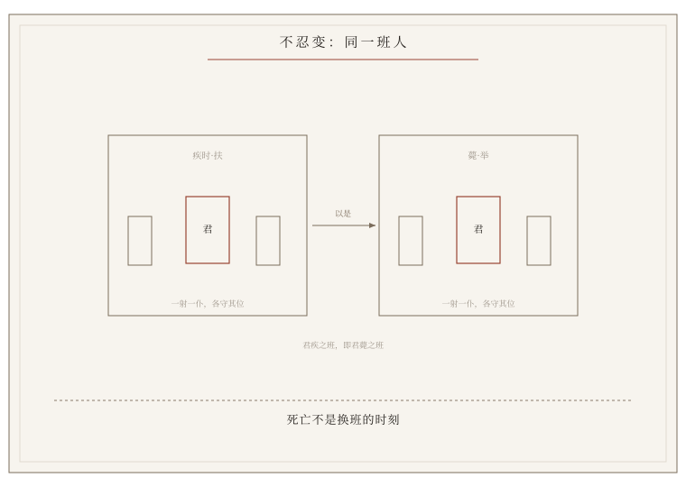

檀弓上 · 三·六十七 · 第 270 课
扶君，卜人師扶右，射人師扶左。君薨，以是舉。
说什么事：君病重，扶的人左右有定；君死了，抬尸还是用这班人。礼不因生死而换人。
落在哪一层：礼，兼及礼数与礼意。论「不忍变」。
为何编在此位：上节论失时，此节论不易。时不可差，人不可换，两义相足。
【经】扶君，卜人師扶右，射人師扶左。君薨，以是舉。
【注】谓君疾时也。卜当为仆，声之误也。仆人、射人，皆平生时赞正君服位者。不忍变也。《周礼·射人》：「大丧，与仆人迁尸。」
【疏】此一节论君薨所举迁尸之人。知是「君疾时」者，以下云「君薨，以是举」，故知君疾时也。知「卜当为仆」者，以卜人无正君之事。案《周礼·大仆职》「掌兆荃之服位」，《射人职》「掌国之三公孤卿大夫之位」，及王举动悉随王，故知也。
扶君 君病重时扶之。
卜人师 注「卜当为仆，声之误」。仆人师，太仆之长。
射人师 射人之长。
扶右、扶左 一右一左，夹扶。
君薨 君死。
以是举 用这班人抬尸。举，迁举其尸。
赞正君服位 相赞而正君之衣服与位置。
不忍变 不忍改换其人。
君病重的时候，仆人（原作「卜人」）之长扶右边，射人之长扶左边。君死了，还是用这班人抬他。
此节只三句，说的是一件小事：抬尸的人用谁。
礼定得极细：扶君，右一人、左一人，各有其官。君一死，本可另派执事，礼却说「以是举」——用扶过他的人抬他。
注四字「不忍变也」，是此节之心。改派一班新人，事一样办得成，只是那个「扶过他的人最后抬他一次」的意思断了。
注又校正一字：「卜当为仆」，以卜人无正君服位之事，仆人与射人皆平生赞正君服位者。《周礼·射人》「大丧，与仆人迁尸」，正与此合。
第一层 左右之定 扶君有左右，抬尸亦用其班。礼在细处最不肯含糊：谁在左、谁在右，皆是其平日所立之位。乱其左右，则乱其平生。
第二层 不忍变 三字最重。礼之「不变」，不是守旧，是不忍。人死了，最容易被当作「事」来办——派谁都可以，快些办完。此节偏说：还是那两个人。这一句把丧事从「事务」拉回「人事」。
第三层 校字之例 「卜」当作「仆」，因卜人无正君服位之事，而仆射有之。此为以职证字：字有误而职不可误。注家之法，由此可见。
第四层 与上一节相照 269 论「时」不可差，此节论「人」不可换。时与人是礼的两条硬边：早了晚了都不行，换了人也不行。
与今日何干 一个老员工病了三年，最后送他的人，还是那几年扶他的人。此节不讲大道理，只讲这个。今日机构化之后，一切都可以「安排」；此节提醒：有些安排，不如不安排。
| 左 | 右 |
|---|---|
| 扶君 | 君疾时 |
| 仆人师扶右 | 平生赞正之位 |
| 射人师扶左 | 同上 |
| 君薨 | 以是举 |
| 不忍变 | 不换其人 |
| 卜当为仆 | 以职证字 |
| 时不可差 | 269 |
| 人不可换 | 270 |
画一间君寝的内室，视点平。榻上卧一人（覆衾至胸），榻左右各立一人：右者衣冠整、手托其右臂；左者衣冠整、手托其左臂。榻前地上放着一双未穿的舄。榻后壁上一道素帷半垂。不写文字、不画人面细节。赭色只用在榻前那双舄的鞋口与右者腰间的一枚小佩。
